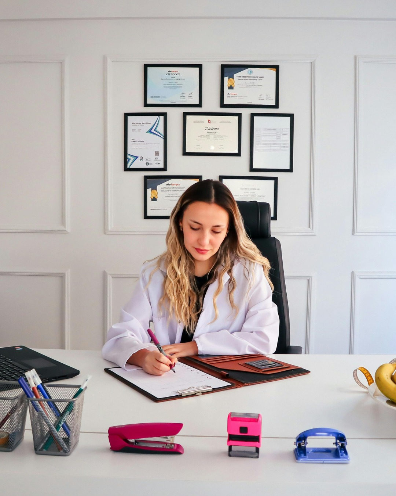
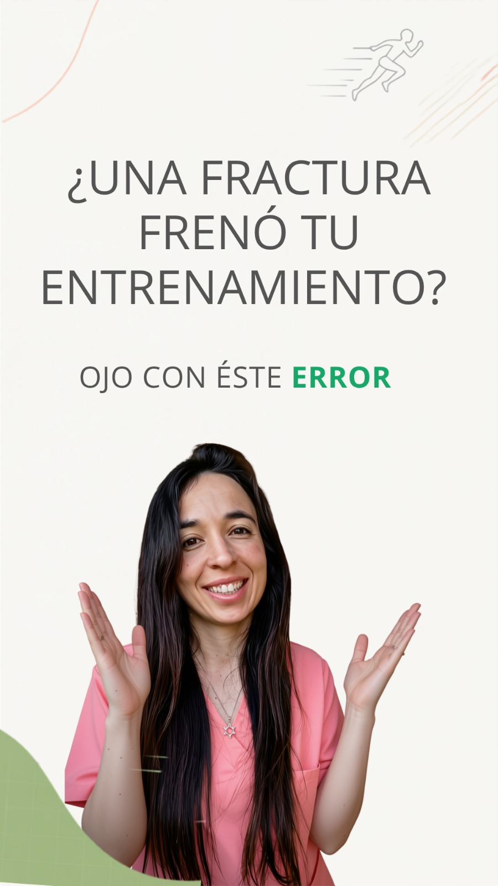
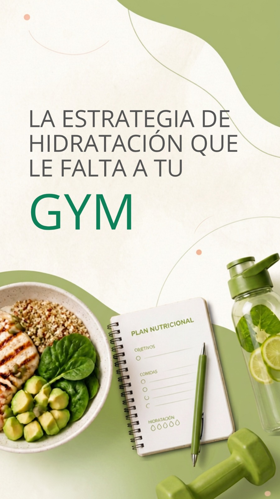

Evidencia
Decisiones nutricionales basadas en conocimiento científico y evidencia disponible.
Sabrina Agostini · Licenciada en Nutrición
Mejorá tu composición corporal, rendimiento y alimentación con un enfoque científico, personalizado y sostenible.

Sobre mí
Soy Sabrina, Licenciada en Nutrición, Técnica en Alimentos y me especializo en nutrición deportiva.
Trabajo desde la evidencia científica, pero también desde la realidad: tus horarios, preferencias, actividad física y hábitos forman parte del proceso.
Mi enfoque
Decisiones nutricionales basadas en conocimiento científico y evidencia disponible.
Un abordaje adaptado a tus objetivos, contexto, preferencias y necesidades.
El foco está en construir cambios sostenibles, no en soluciones imposibles de mantener.
Servicios
Primer encuentro para conocer tus objetivos y comenzar a construir un abordaje personalizado.
Espacio para revisar avances, ajustar estrategias y acompañar el proceso.
La herramienta más precisa para conocer en detalle de qué está compuesto tu peso: masa muscular, masa adiposa, masa ósea y residual.
Proceso guiado para ganar masa muscular, perder grasa y potenciar rendimiento en el gimnasio.
¿Para quién es?
Para quienes buscan acompañar entrenamiento y rendimiento desde la nutrición.
Para quienes quieren trabajar sobre composición corporal con objetivos realistas.
Para quienes quieren ordenar su alimentación y construir hábitos sostenibles.


Preguntas frecuentes
Sí. Las consultas online están disponibles para personas de todo Argentina.
En La Plata, en Cirec.
Sí. El abordaje puede adaptarse a objetivos relacionados con actividad física y rendimiento.
Podés reservar online desde el botón de turnos o escribir por WhatsApp si querés hacer una consulta antes.
Consultorios
También podés realizar tu consulta de manera online desde cualquier punto de Argentina.
Tu próximo paso
Contame qué querés lograr y encontremos una estrategia que puedas sostener.